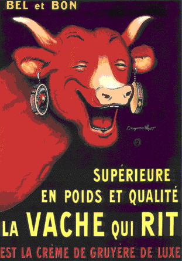

Both earrings have pictures of the cow with two earrings,
both of which have pictures of the cow with two earrings,
both of which have pictures of the cow with two earrings,
and so on.
The limit of the cow pictures is a
Cantor set
.

Return to
Things that look like fractals but aren't
.